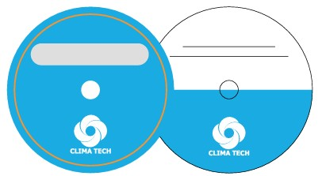
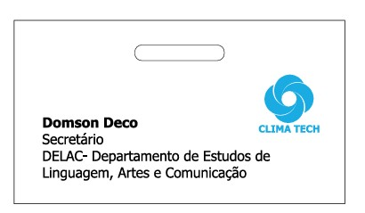
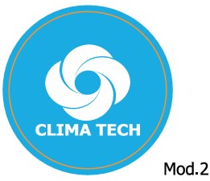

Versão Principal
Assinatura Vertical
A assinatura vertical é a versão preferencial da marca. Caracteriza-se pelo símbolo centralizado acima do logotipo. Deve ser aplicada prioritariamente em todos os materiais impressos e digitais.
Normas e diretrizes para a aplicação consistente da marca CLIMA TECH
Em um projeto de identidade visual, o que se busca é transmitir uma série de informações através de imagens: conceitos de qualidade, tradição, modernidade e competitividade. Este manual coordena a instalação e manutenção da marca CLIMA TECH, estabelecendo normas e orientando a veiculação consistente da marca em todos os suportes.
"Uma marca bem-sucedida tem tudo a ver com o detalhe. Cada faceta de uma marca tem que estar aparente nas comunicações, no comportamento, nos produtos e nos ambientes da organização."
Brian Boylan, presidente da Wolff Olins
A marca da CLIMA TECH foi concebida em 2024 pelo designer Domson Dlofo, a pedido do professor Vicente Mazoio, Docente do ISCIM. A marca privilegia as letras C, de Clima, e T, de Tech, trabalhadas graficamente para representar os valores e a identidade da empresa. A Clima Tech optou por manter a representação visual original da marca.
Criada em 2024A identidade visual da Clima Tech divide-se em três componentes principais:
O uso correto destes três elementos garante que a qualidade e a estabilidade da imagem institucional da CLIMA TECH sejam corretamente transmitidas em todos os contextos.
A assinatura vertical é a versão preferencial da marca. Caracteriza-se pelo símbolo centralizado acima do logotipo. Deve ser aplicada prioritariamente em todos os materiais impressos e digitais.
Na versão auxiliar, o símbolo posiciona-se à esquerda do logotipo, com a base superior do símbolo alinhada ao centro do texto. Utilizar apenas quando a versão vertical não seja aplicável, principalmente em brindes.
Quando não é possível utilizar a marca na sua versão original, as versões a traço resolvem problemas específicos de aplicação. Devem ser aplicadas sobre fundos claros até tons médios (até 50% de saturação), em impressões especiais.
Em tecidos coloridos, deve-se utilizar a versão a traço negativa, escolhendo aquela que proporciona maior contraste. A versão preferencial em azul pode ser usada sobre tecidos brancos e cinzas claros.
A marca pode ser aplicada apenas sobre fundos preto, branco, cinza e azul institucional. O uso sobre outros fundos coloridos é expressamente proibido.
Em fundos fotográficos, a marca pode ser aplicada na cor institucional ou em branco, conforme o tom da imagem. Quando a legibilidade for comprometida em qualquer versão, utilizar um box branco com as margens da área de não interferência.

Para etiquetagem e impressão de CDs pode-se utilizar qualquer um dos modelos representados. A área reservada à escrita do conteúdo pode ser suprimida quando desnecessária.

Os crachás são impressos por termotransferência ou sublimação. O cordão traz a marca aplicada em serigrafia, garantindo a integridade visual em uso contínuo.
